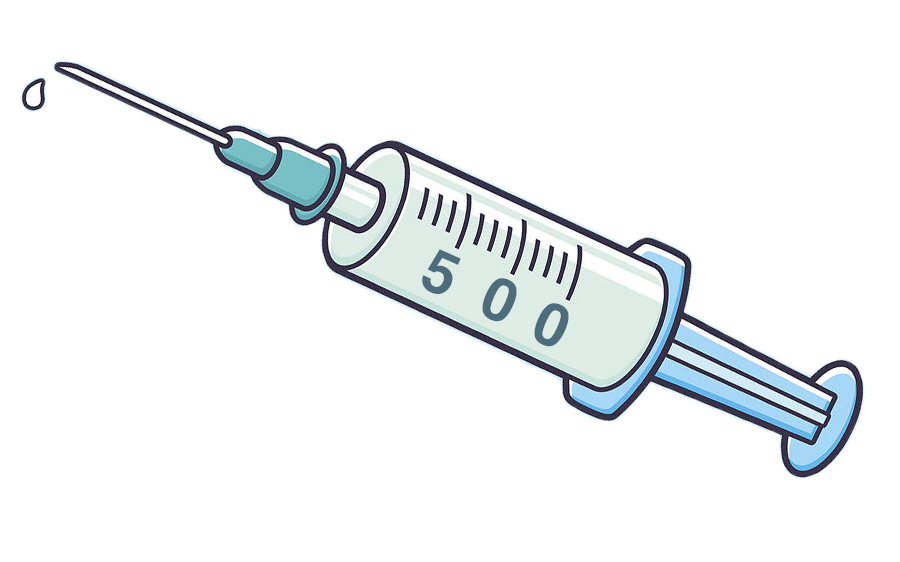

{% extends 'base.html' %}
{% block content %}
{% load static %}

<style>
    body {
      background:#E6EFF1;
    }
</style>

<center>
    <div class="message">
        </img>
        <h2>Page not found</h2>
        <p>Sorry we couldn't find the page you were looking for.</p>
        <p>We suggest you return to main section</p>
        <button><a href="{% url 'home' %}">Go to main page</a></button>
        
    </div>
</center>

{% endblock %}